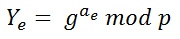
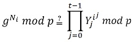

Seien n und t natürliche Zahlen. In einem (n,t)-Secret Sharing Protokoll wird das Geheimnis auf n Personen aufgeteilt. Jede Person hat einen Share des Geheimnisses. Wenn sich t dieser Personen zusammentun, können sie das Geheimnis rekonstruieren. Wenn sich aber weniger als t dieser Teilgeheimnisträger zusammentun, können sie keine relevanten Informationen über das Geheimnis erhalten. Dieses Prinzip kann man mit einer Schatzkarte vergleichen, die auf mehrere Personen verteilt wird. Nur wenn alle Teile der Schatzkarte zusammengelegt werden, kann man den Schatz finden. Bedenkt man jetzt jedoch, dass jeder Teilgeheimnisträger seinen Teil der Schatzkarte verändern und dadurch die Bedeutung der gesamten Karte ändern könnte, ist es notwendig, das zu verhindern. Der Verifiable Secret Sharing-Algorithmus erweitert den Shamir's Secret Sharing Algorithmus um diese Funktionaliät.
Der Algorithmus von Shamir basiert auf der Lagrange-Polynominterpolation und ist ein (n,t)-Secret-Sharing-Protokoll.
Der Dealer will ein Geheimnis s ∈ ℕ verteilen.
Der Dealer legt alle Parameter fest.
Bis auf s und die im Schritt 2 eingeführten Koeffizienten sind alle Parameter öffentlich und allen Spielern bekannt. Die Koeffizienten und das Geheimnis sind nur dem Dealer bekannt.
Er wählt geheime Elemente ai ∈ ℕ [1 ≤ i ≤ (t-1); 1 ≤ ai < q] zufällig und konstruiert daraus das Polynom:
Das Polynom ist vom Grad t-1. Der Koeffizient a0 ist das Geheimnis s
Der Dealer berechnet für jeden Spieler seinen Share, Ni = P(i) mod q und verteilt diese. Bei i [1≤i≤n] handelt sich um die ID des jeweiligen Spielers. Unabhängig davon werden vom Dealer die Commitments Ye [0 ≤ e ≤ (t-1)] berechnet und an alle Spieler verteilt. Die Berechnung der Commitments sieht folgendermaßen aus.

Bei ae handelt es sich um die Koeffizienten.
Die Commitments werden später zur Überprüfung und Integritätssicherung der Shares benötigt.
Nun bekommt jeder Spieler seinen Share und alle Commitments übermittelt.
Jeder Spieler sollte nach Erhalt des Shares diesen prüfen. Dies geschieht mittels Check, wobei die Korrektheit folgender Gleichung überprüft wird

Auf der linken Seite wird der Generator g mit dem persönlichen Share des jeweiligen Spielers potenziert. Auf der rechten Seite wird das Commitment potenziert mit der Spieler-ID i hoch dem Index j der Produktformel. Dieser Vorgang wird für jedes Commitment wiederholt und die Ergebnisse miteinander multipliziert. Stimmt die Gleichung, ist der Share als korrekt verifiziert. Diese Berechnung muss für jeden zu überprüfenden Share seperat durchgeführt werden. Wenn sich die Spieler zur Rekonstruktion des Polynoms zusammenfinden, sollte der Check-Vorgang wiederholt werden, um sicherzustellen, dass kein Spieler seinen Share verändert hat.
Die Rekonstruktion dient zur Wiederherstellung des vom Dealer generierten Polynoms. Aus dem Polynom können die Spieler das Geheimnis s ablesen. Um eine erfolgreiche Rekonstruktion durchführen zu können, muss mindestens die in Schritt 1 definierte Anzahl an Spielern zur Rekonstruktion t anwesend sein. Diese Spieler müssen ihren persönlichen Share zur Verfügung stellen, damit durch nachfolgende Berechnung das ursprüngliche Polynom wiederhergestellt werden kann.

Hierbei handelt es sich um den Polynominterpolation-Algorithmus nach Lagrange. Bei u handelt es sich um die Anzahl der zur Rekonstruktion ausgewählten Shares und bei k und l um die IDs der jeweiligen Spieler. Als Ergebnis wird ein Polynom P'(x) geliefert. Da es sich beim Polynom P'(x) um das in Schritt 2 definierte Polynom P(x) handelt, wenn genügend Spieler ausgewählt wurden, ist der Koeffizient a0 das Geheimnis s.
Die Veränderung eines zur Rekonstruktion verwendeten Shares hätte als Ergebnis ein falsches Polynom zur Folge, wodurch auch das Geheimnis s verfälscht werden würde. Genau an diesem Punkt kommen die Verbesserungen des Verifiable Secret Sharing-Algorithmus zum Tragen und es wird eine solche Fälschung bemerkt. Beim Secret Sharing nach Shamir würde so eine Änderung nicht auffallen.